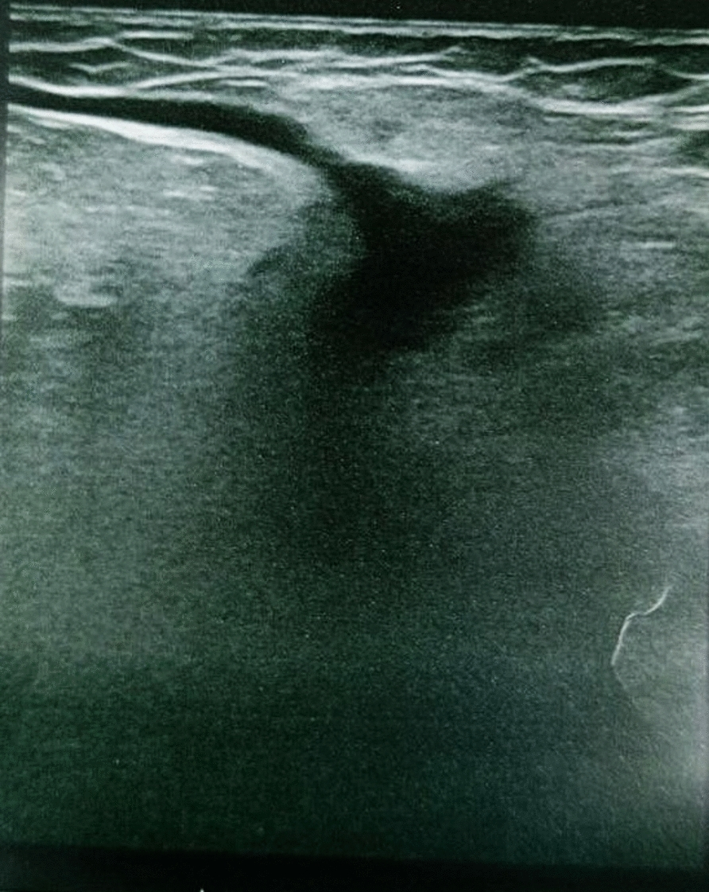
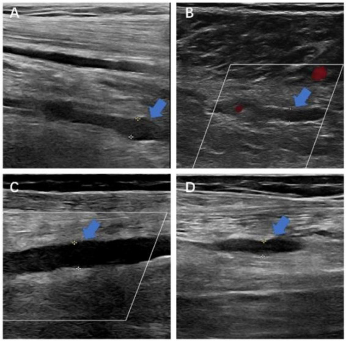

Тромбофлебит. Посттромбофлебитический синдром
Этиология и патогенез острого тромбофлебита поверхностных вен
Варикозное расширение вен нижних конечностей встречается у 1,5—5% населения и служит фоном для развития тромбофлебита поверхностных вен — острого воспаления стенки подкожной вены с образованием тромба в её просвете.
Причины заболевания: инфекция (бактериальная или вирусная), травма стенки вены (включая длительный катетер и инъекции), обширные операции, ожоги, аллергические реакции и злокачественные опухоли, действующие через паранеопластический синдром (выделение прокоагулянтных факторов, цитокинов, муцинов). Мигрирующий тромбофлебит требует исключения скрытой опухоли.
Патогенез включает триаду Вирхова: повреждение стенки, замедление кровотока, гиперкоагуляция. Адгезия тромбоцитов к коллагену и выделение тромбоксана A₂ и АДФ формируют первичный белый тромб. Экспрессия тканевого фактора активирует фактор VII и приводит к образованию тромбина, расщепляющего фибриноген до фибрина с возникновением смешанного тромба. Выработка интерлейкина-1, фактора некроза опухоли и кислородных радикалов вызывает инфильтрацию стенки нейтрофилами и лимфоцитами. Процесс от повреждения эндотелия до болезненного инфильтрата занимает от нескольких часов до суток.
В отличие от лимфангиита, при котором красные полосы тянутся от очага инфекции к лимфоузлам без уплотнения, сопровождаясь высокой лихорадкой, ознобом и регионарным лимфаденитом, при тромбофлебите гиперемия по ходу сосуда ограничена плотным болезненным тяжем, температура субфебрильная, а лимфаденит нетипичен.
Главное, что следует вынести из этого раздела: тромбофлебит поверхностных вен — не «просто воспаление», а процесс, в котором тромбообразование и воспаление стенки вены взаимно поддерживают и усиливают друг друга, а варикозное расширение вен создаёт для этого готовую почву.
Клиническая картина и формы острого тромбофлебита поверхностных вен
Заболевание начинается остро: над поражённой веной наблюдается гиперемия, под кожей пальпируется плотный болезненный тяж, температура тела поднимается до 37,2–37,5 °C (высокая лихорадка сигнализирует об осложнениях).

Распространение тромба в проксимальном направлении по большой подкожной вене называется восходящим тромбофлебитом. При достижении паховой складки (места впадения в бедренную вену) возникает неотложное состояние с риском тромбоэмболии лёгочной артерии. На УЗИ просвет заполнен гипоэхогенными массами; ключевой признак — отсутствие компрессии.
Тромбоз варикозного узла в зоне паховой складки дифференцируют с ущемлённой бедренной грыжей: при тромбозе отсутствуют симптомы кишечной непроходимости, узел не вправляется и не имеет кашлевого толчка.
Тромбофлебит поверхностных вен в 70–90 % случаев сопровождается тромбозом глубоких вен голени. Это означает, что поверхностный процесс никогда нельзя считать изолированным без инструментального исключения поражения глубокой системы. При неполноценном лечении тромбоза глубоких вен почти у 50 % больных на протяжении трёхмесячного периода может возникнуть эмболия лёгочных артерий.
Лечение острого тромбофлебита поверхностных вен
Выбор тактики целиком определяется тем, где находится верхняя граница тромба.
Если тромб не выходит за пределы голени, проводят амбулаторное консервативное лечение тромбофлебита: НПВС, флеботоники, мази с гепарином или диклофенаком и обязательная эластическая компрессия.
Если тромб достиг уровня колена, пациента госпитализируют. При угрозе перехода в глубокую систему у паховой складки показана неотложная операция — кроссэктомия (перевязка и пересечение большой подкожной вены у места впадения в бедренную). При молодом тромбозе (давностью менее 5–7 дней) возможна флебэктомия — иссечение поражённой вены с тромбом.
Главное, что следует запомнить: граница «голень — выше колена» — это не условность, а точка смены тактики. Тромб в пределах голени лечат амбулаторно и консервативно; восходящий тромбофлебит выше колена, тем более достигший паховой складки, требует госпитализации и операции.
Патогенез острого тромбоза глубоких вен
Ток венозной крови обеспечивает мышечно-венозная помпа — сокращение мышц голени, сжимающее вены. При иммобилизации помпа перестаёт работать, и в суральных венозных синусах возникают стаз и оседание тромбоцитов.

Так развивается тромбоз глубоких вен (ТГВ), который начинается в суральных синусах в 89 % случаев; голень поражается первой в 70–90 % случаев. В течение 6 месяцев у 70 % больных проходимость вен восстанавливается, однако у 44 % повреждается клапанный аппарат. При неполноценном лечении у почти 50 % больных может развиться посттромбофлебитический синдром.
Развитию ТГВ способствуют пожилой возраст, сердечно-сосудистые заболевания, сахарный диабет, ожирение и онкологические патологии.
Таким образом, ведущее звено патогенеза ТГВ — замедление кровотока в суральных синусах вследствие выключения мышечно-венозной помпы, а всё остальное — лишь условия, которые делают этот стаз более опасным.
Клиническая картина тромбоза глубоких вен: голень и илеофеморальный сегмент
Тромбоз глубоких вен начинается в суральных венозных синусах и венах голени (70–90 % всех случаев) и может распространяться выше на подколенную, бедренную и подвздошные вены. Около половины случаев протекает бессимптомно из-за компенсации оттока мышечно-венозной помпой и коллатералями.
Симптомы тромбоза вен голени: мягкий отёк нижней трети голени (оставляет ямку при надавливании, не распространяется выше колена) и тупая боль в икроножных мышцах при пальпации, усиливающаяся при ходьбе и к вечеру. Характерен симптом Хоманса (Homans' sign) — боль в икрах при тыльном сгибании стопы из-за растяжения воспалённой мышцы. При сдавливании манжеткой сфигмоманометра средней третьи голени боль возникат при значительно меньшем давлении, чем у здорового человека (150–180 мм рт. ст.).
Распространение тромба выше устья глубокой ветви бедренной вены приводит к увеличению объёма всей конечности (голени и бедра), усилению болей и появлению цианоза — синюшного оттенка кожи из-за просвечивания венозной крови с высоким содержанием восстановленного гемоглобина.
Илеофеморальный тромбоз — окклюзия глубоких вен на уровне подвздошно-бедренного сегмента (от паховой складки до подвздошных вен). Проявляется болями по передневнутренней поверхности бедра, в паховой области и икрах, выраженным цианозом и отчётливой разницей в объёме ног.
| Признак | Тромбоз вен голени | Илеофеморальный тромбоз |
|---|---|---|
| Уровень поражения | Суральные синусы и вены голени | Бедренная и подвздошные вены |
| Отёк | Нижняя треть голени, мягкий, с ямкой | Вся конечность, выраженный |
| Цвет кожи | Не изменён или слегка бледный | Цианоз — кожа синюшная |
| Боль | Икроножные мышцы, симптом Хоманса | Передневнутренняя поверхность бедра, паховая область, икры |
Тяжёлая форма илеофеморального тромбоза — белая болевая флегмазия (phlegmasia alba dolens). Механизм: массивный венозный застой за счёт давления и воспалительных медиаторов запускает выраженный рефлекторный спазм артерий конечности. Кожа становится мертвенно-бледной и холодной, пульсация артерий стопы ослабевает или исчезает; без лечения грозит гангреной.
Главный вывод раздела: уровень тромбоза определяет и картину болезни, и её опасность. При неполноценном лечении почти у 50 % больных в течение трёх месяцев может развиться эмболия лёгочных артерий.
Диагностика тромбоза глубоких вен
Клинические признаки (отёк, боль, симптом Хоманса) требуют обязательного инструментального подтверждения.
Дуплексное сканирование объединяет УЗИ в В-режиме (изображение стенки и просвета) с допплеровским цветовым картированием кровотока. Ключевой признак тромбоза при компрессионной пробе — вена не спадается при надавливании датчиком, её просвет содержит неоднородные массы. Метод визуализирует клапанную недостаточность и флотирующий тромб — структуру, прикреплённую к стенке только одним концом и свободно колышущуюся в токе крови, что создаёт высокий риск отрыва. Дуплексное сканирование остаётся методом первого выбора при любом подозрении на тромбоз глубоких вен.
Флебография — инвазивное рентгенологическое исследование с введением йодсодержащего контрастного вещества. Применяется как уточняющий метод при сомнительных данных УЗИ, флотирующем тромбе или перед операцией из-за рисков аллергии и повреждения стенок сосуда.
МР-ангиография — визуализация с помощью магнитно-резонансного томографа, где отсутствие МР-сигнала от движущейся крови означает окклюзию вены. Применяется при илеофеморальном тромбозе и поражении подвздошных и нижней полой вен, когда УЗИ ограничено кишечными газами и глубиной залегания сосудов.
Осложнения тромбоза глубоких вен: ТЭЛА
Тромбоэмболия лёгочной артерии (ТЭЛА) — закупорка просвета лёгочных артерий тромботическим фрагментом из вен большого круга кровообращения.
Механизм: свободный конец флотирующего тромба оторвается и проходит через нижнюю полую вену и правые отделы сердца в лёгочные артерии. Мелкий фрагмент перекрывает периферическую ветвь, крупный — долевую или главную артерию, нарушая газообмен и создавая острую нагрузку на правый желудочек.
Риск ТЭЛА минимален при тромбозе вен голени (70–90 % случаев) и возрастает при илеофеморальном тромбозе, достигая максимума при поражении подвздошных вен. При неполноценном лечении почти у 50 % больных возникает эмболия лёгочных артерий на протяжении трёхмесячного периода.
Ключевой вывод раздела: любой флотирующий тромб выше уровня голени следует считать непосредственным источником ТЭЛА до тех пор, пока антикоагуляция не переведёт его в фиксированный.
Лечение тромбоза глубоких вен: консервативное и тромболитическое
Основа лечения — антикоагулянтная терапия, тормозящая свёртывание крови и предотвращающая рост тромба.
Терапию начинают с внутривенного введения гепарина (дозу подбирают до удлинения АЧТВ в 1,5–2 раза от исходного). Через 5–7 дней подключают непрямые антикоагулянты (варфарин и аналоги), блокирующие синтез витамин-К-зависимых факторов свёртывания в печени. После периода перекрытия прием непрямых антикоагулянтов продолжают 3–6 месяцев. За этот срок проходимость венозных стволов восстанавливается у 70 % больных, однако у 44 % остаются фибринозные изменения стенок и несостоятельность клапанов. Компрессия конечности обязательна.
Тромболитическая терапия (стрептокиназа, урокиназа, тканевой активатор плазминогена) приводит к прямому растворению тромба плазмином. Метод сопряжён с высоким риском внутричерепных геморрагий и применим только в первые 4–7 сут от начала тромбоза. Менее 10 % больных с тяжёлым илеофеморальным тромбозом соответствуют критериям отбора. Частота развития хронической венозной недостаточности при гепаринотерапии и тромболизисе не отличается.
| Параметр | Антикоагулянтная терапия (гепарин → непрямые антикоагулянты) | Тромболитическая терапия |
|---|---|---|
| Механизм действия | Торможение роста тромба; реканализация — за счёт собственного фибринолиза | Прямое растворение тромба активированным плазмином |
| Показания | Все формы тромбоза глубоких вен | Тяжёлый илеофеморальный тромбоз; не более 4–7 сут от начала; менее 10 % больных соответствуют критериям |
| Риск кровотечений | Умеренный, управляемый контролем МНО/АЧТВ | Высокий, включая внутричерепные геморрагии |
| Частота хронической венозной недостаточности | Не отличается от тромболизиса | Не отличается от гепаринотерапии |
| Схема | Гепарин 5–7 сут → перекрытие с непрямыми антикоагулянтами → курс 3–6 мес | Системное или катетерное введение фибринолитика; строгий отбор пациентов |
Имплантацию кава-фильтра в нижнюю полую вену проводят при флотирующем тромбе или противопоказаниях к антикоагулянтам для механической задержки тромботических фрагментов.
Профилактика включает: 1) раннюю активизацию больных после операций; 2) эластическую компрессию голеней; 3) назначение непрямых антикоагулянтов пациентам групп риска. Своевременная антикоагулянтная профилактика снижает риск рецидивов ТЭЛА вдвое.
Хирургическое лечение тромбоза глубоких вен: тромбэктомия и кава-фильтр
При недостаточности антикоагулянтной и тромболитической терапии применяются хирургические методы.
Тромбэктомия — удаление тромба из глубокой вены с помощью катетера Фогарти (тонкой трубки с надувным баллончиком на конце). Хирург вводит катетер за тромб, раздувает баллончик и извлекает массы. Показания возникают при илеофеморальном тромбозе с острой венозной непроходимостью в первые 4–7 суток от начала тромбоза. Применяется ограниченно из-за высокой частоты повторных тромбозов.
Кава-фильтр — металлическая конструкция из спиц, раскрывающаяся в просвете нижней полой вены ниже впадения почечных вен. Фильтр задерживает крупные фрагменты тромба. Имплантация выполняется под рентгеновским контролем через бедренную или яремную вену. Серия каваграмм и флебограмма позволяют хирургу выбрать уровень установки относительно почечных вен и убедиться в защите от эмболов.
Показания: флотирующий тромб в системе нижней полой вены, рецидивирующая ТЭЛА на фоне антикоагуляции или противопоказания к антикоагулянтам (активное кровотечение, недавняя операция на головном мозге).
Ограничения: скопление тромбов может закрыть просвет фильтра или вызвать окклюзию нижней полой вены ниже него (выше тромб не нарастает из-за кровотока почечных вен). Фильтр не устраняет причину тромбообразования и без антикоагуляции не снижает риск посттромбофлебитического синдрома, возникающего почти у 50 % больных при неполноценном лечении.
Тромбэктомия и кава-фильтр — не альтернатива лекарственному лечению, а его дополнение в строго определённых ситуациях: первая — при раннем илеофеморальном тромбозе, второй — при угрозе массивной эмболии, когда антикоагулянты неэффективны или противопоказаны.
Тромбоз подключичной вены (синдром Педжета–Шреттера)
Синдром Педжета–Шреттера («тромбоз усилия») — острый тромбоз подключичной вены, проходящей через подключично-рёберное пространство между ключицей и первым ребром. При интенсивной работе руки (броски, гребля, подъём тяжестей) вена сдавливается, что повреждает её стенку и запускает тромбообразование. Встречается у спортсменов и людей физического труда, чаще поражается правая рука.
Симптомы: плотный отёк без ямок от кисти до плечевого пояса, не спадающий в покое, боль, цианоз кисти и предплечья, а также расширенные напряжённые подкожные вены на плече и груди.
Метод первого выбора для диагностики — дуплексное сканирование. Флебографию выполняют для оценки коллатерального кровотока или при планировании вмешательства.
Лечение начинают с антикоагулянтной терапии. При раннем обращении и окклюзии возможна тромбэктомия; при флотирующем тромбе с угрозой эмболии вопрос об операции решается срочно.
Ключевой урок синдрома Педжета–Шреттера: острый тромбоз крупной вены верхней конечности требует такой же быстрой диагностики и антикоагуляции, как и тромбоз глубоких вен ноги.
Патогенез посттромбофлебитического синдрома
Посттромбофлебитический синдром — хроническое нарушение венозного оттока после тромбоза глубоких вен, которое проявляется венозной гипертензией, отёками и трофическими изменениями тканей.
Развитие исходов тромба идет по трем путям: 1) реканализация с сохранением клапанов; 2) реканализация с утратой клапанов (самый частый); 3) облитерация (полное заращение просвета вены с оттоком через коллатерали).
В течение 6 месяцев у 70% больных проходимость вен восстанавливается, но у 44% возникает несостоятельность клапанов. Утрата клапанной функции приводит к обратному току крови (рефлюксу) в вертикальном положении тела, что вызывает постоянную венозную гипертензию голени.
На УЗИ в поперечном сечении выявляются неэхогенные зоны (восстановленный кровоток) и пристенные участки повышенной эхогенности (остаточные тромбы). В продольном сечении при дуплексном сканировании видна чередующаяся цветовая картограмма, снижение скорости и ретроградная волна при пробах.
Венозная гипертензия приводит к пропотеванию воды и белков в ткани, вызывая отёк, гипоксию, фиброз, гиперпигментацию и трофические язвы голени. Развёрнутый синдром возникает почти у 50% больных при неполноценном лечении ТГВ.
Ключевое звено патогенеза — не сам факт тромбоза, а разрушение клапанного аппарата при реканализации.
Клинические формы и стадии посттромбофлебитического синдрома
Выделяют четыре клинические формы: отёчно-болевая форма (упорный отёк и боль при отсутствии или незначительности варикоза); варикозная форма (доминирует вторичный варикоз); язвенная форма (самая тяжёлая, с наличием трофической язвы); смешанная форма (сочетает признаки нескольких вариантов и встречается чаще всего).
Трофические язвы локализуются в области медиальной лодыжки. Их предвестником служит липодерматосклероз — уплотнение кожи и подкожной клетчатки голени. Симптомы (боль, тяжесть, отёк) нарастают к концу дня и спадают после отдыха с возвышенным положением ног.
По степени нарушений синдром делят на три стадии.
| Стадия | Отёчно-болевая форма | Варикозная форма | Язвенная форма | Смешанная форма |
|---|---|---|---|---|
| I — компенсация | Умеренный отёк к вечеру, исчезает после ночного отдыха; боль при длительном стоянии | Расширение подкожных вен без трофических изменений кожи | Не характерна | Сочетание отёка и начального варикоза; трофики нет |
| II — субкомпенсация | Постоянный отёк, не исчезающий полностью; выраженная боль и тяжесть | Прогрессирование варикоза, начальный липодерматосклероз в нижней трети голени | Рубцующаяся или небольшая язва в анамнезе | Стойкий отёк + варикоз + начальные трофические изменения кожи |
| III — декомпенсация | Плотный отёк, индурация нижней трети голени, застойный дерматит, экзема | Выраженный варикоз, липодерматосклероз, застойный дерматит | Рецидивирующие трофические язвы в области медиальной лодыжки | Все признаки вместе: отёк, варикоз, дерматит, экзема, язва |
В стадии III (декомпенсация) развиваются застойный дерматит (бурая пигментация гемосидерином, зуд, шелушение, мокнутие), экзема и рецидивирующие трофические язвы.
Форма определяет клиническую картину, стадия — глубину необратимых изменений, а оба критерия вместе задают тактику лечения и прогноз.
Диагностика посттромбофлебитического синдрома и дифференциальная диагностика
Дуплексное сканирование позволяет выявить неоднородные тромботические массы в просвете вены, каналы реканализации с кровотоком при цветовом картировании и клапанную недостаточность (обратный ток крови). В клинической практике метод заменяет функциональные пробы.
При посттромбофлебитическом синдроме отёк мягкий, ямка долго расправляется, наблюдаются гиперпигментация, липодерматосклероз, застойный дерматит и трофические язвы у медиальной лодыжки. При лимфедеме (накопление лимфы из-за нарушения лимфооттока) отёк плотный («деревянный»), кожа бледная и утолщённая. В запущенных случаях лимфедема переходит в слоновость — необратимое разрастание соединительной ткани. Дуплексное сканирование при лимфедеме выявляет интактные глубокие вены без тромбов, реканализации и клапанной недостаточности.
| Признак | Посттромбофлебитический синдром | Лимфедема / слоновость | Варикозная болезнь без тромбоза |
|---|---|---|---|
| Характер отёка | Мягкий, ямка медленно расправляется, нарастает к вечеру | Плотный, «деревянный», ямка почти не образуется | Умеренный, мягкий, исчезает после ночного отдыха |
| Кожные изменения | Гиперпигментация, липодерматосклероз, застойный дерматит, трофические язвы у медиальной лодыжки | Бледная, утолщённая кожа с грубыми складками; при слоновости — бугристость | Расширенные варикозные узлы, кожа длительно без трофических нарушений |
| Анамнез | Перенесённый тромбоз глубоких вен | Нет тромбоза; часто рожистое воспаление, лимфангиит или врождённая патология | Нет тромбоза; семейная предрасположенность, длительное стояние |
| Дуплексное сканирование | Тромботические массы, каналы реканализации, клапанная недостаточность | Глубокие вены интактны, клапаны состоятельны | Несостоятельность клапанов поверхностных вен, глубокие вены проходимы |
При варикозной болезни глубокие вены проходимы, а клапанная недостаточность затрагивает поверхностные вены. Заболевание развивается годами без острого эпизода тромбоза. При посттромбофлебитическом синдроме у почти 50% больных с нелеченым тромбозом глубоких вен патология формируется за несколько лет.
При сдавлении вен опухолями кровоток не определяется, но просвет вены свободен от тромбов и видно внешнее объёмное образование. Для уточнения проводят МР-ангиографию. Сдавление наблюдается у 30–40% больных с новообразованиями средостения и забрюшинного пространства и может протекать как паранеопластический синдром.
Ключевой вывод: дуплексное сканирование решает большинство диагностических задач при подозрении на посттромбофлебитический синдром — оно подтверждает перенесённый тромбоз, оценивает реканализацию и выявляет клапанную недостаточность, а нормальная картина глубоких вен исключает посттромбофлебитический синдром.
Лечение посттромбофлебитического синдрома: консервативное и хирургическое
Без системного лечения посттромбофлебитический синдром прогрессирует до образования трофической язвы.
Основа консервативной терапии — флеботоники (детралекс [диосмин с гесперидином], венорутон), повышающие тонус вен и снижающие отёк. Диосмин угнетает агрегацию лейкоцитов на эндотелии, снижая воспаление. Курс лечения обычно составляет 3–4 недели.
Местные гели с гепарином и троксерутином уменьшают дерматит и болезненность. Эластическая компрессия создаёт внешнее давление, частично компенсируя несостоятельность клапанов. Компрессию сочетают с медикаментозным лечением на всех стадиях.
Трофическая язва — дефект кожи, возникающий при нарушении питания тканей. При венозном застое лейкоциты выделяют кислородные радикалы, вызывающие тромбоз капилляров, гипоксию и микронекрозы, которые не дают язве зарубцеваться.
Лечение проводится в два этапа. Консервативный этап (флеботоники, компрессия, возвышенное положение конечности) обязателен. Пока продолжается реканализация глубоких вен, хирургическое вмешательство противопоказано.
Операция показана после завершения реканализации при сохраняющейся несостоятельности поверхностных и коммуникантных вен (сосудов, соединяющих поверхностную систему с глубокой). При разрушении их клапанов кровь движется в обратном направлении, повышая давление в подкожной сети. Его устраняет операция Линтона — субфасциальная перевязка и пересечение коммуникантных вен. Поверхностные варикозные вены удаляют флебэктомией.
Ключевой вывод: при неполноценном лечении тромбоза глубоких вен почти у 50 % больных может возникнуть эмболия лёгочных артерий на протяжении трёхмесячного периода, а у выживших формируется посттромбофлебитический синдром, требующий консервативного, а затем при необходимости хирургического лечения.
Источники
- Госпитальная хирургия. Синдромология. Миланов 2013
- Хирургические болезни. Кузин
Иллюстрации
- Wikimedia Commons, CC BY-NC-ND, https://europepmc.org/article/PMC/PMC13277289
- Wikimedia Commons, CC BY-NC-ND, https://europepmc.org/article/PMC/PMC13400253
- Wikimedia Commons, CC BY, https://europepmc.org/article/PMC/PMC13349885
- Wikimedia Commons, CC BY, https://europepmc.org/article/PMC/PMC13066656
- Wikimedia Commons, CC BY, https://europepmc.org/article/PMC/PMC13260017
- Wikimedia Commons, CC BY-NC, https://europepmc.org/article/PMC/PMC13448000
- Wikimedia Commons, CC BY, https://europepmc.org/article/PMC/PMC11505388
- Wikimedia Commons, CC BY, https://europepmc.org/article/PMC/PMC6318114
- Wikimedia Commons, CC BY-NC-ND, https://europepmc.org/article/PMC/PMC11307564
- Wikimedia Commons, CC BY-NC-ND, https://europepmc.org/article/PMC/PMC11307564